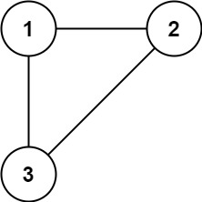
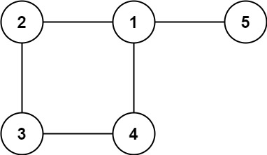

684. 冗余连接
并查集逐边合并：一条边的两端已经同根，说明它把环闭上，就是多余的边。
思路
- 图 = 树 + 恰一条多余边；依次加边，前 n−1 条都只是把两棵树合并。
- 遇到两端已连通的边：它连的两个点本来就在一个分量里，这条边就是成环的那条。
- 返回的天然是「最后出现」的答案：环在最后一条环边加入时才闭合，而它正是第一个两端同根的边。
图解
最优解
1class Solution {2 int[] parent;3 4 public int[] findRedundantConnection(int[][] edges) {5 int n = edges.length;6 parent = new int[n + 1];7 for (int i = 1; i <= n; i++) parent[i] = i;8 for (int[] e : edges) {9 // 两个端点已经连通：加上这条边就成环，它就是答案10 if (find(e[0]) == find(e[1])) return e;11 parent[find(e[0])] = find(e[1]);12 }13 return new int[0]; // 题目保证有解，不会走到这里14 }15 16 // 找根，路径减半压缩17 private int find(int x) {18 while (parent[x] != x) {19 parent[x] = parent[parent[x]];20 x = parent[x];21 }22 return x;23 }24}题目
树可以看成是一个连通且 无环 的 无向 图。
给定一个图，该图从一棵 n 个节点 (节点值 1～n) 的树中添加一条边后获得。添加的边的两个不同顶点编号在 1 到 n 中间，且这条附加的边不属于树中已存在的边。图的信息记录于长度为 n 的二维数组 edges ，edges[i] = [ai, bi] 表示图中在 ai 和 bi 之间存在一条边。
请找出一条可以删去的边，删除后可使得剩余部分是一个有着 n 个节点的树。如果有多个答案，则返回数组 edges 中最后出现的那个。
示例 1：

输入: edges = [[1,2], [1,3], [2,3]] 输出: [2,3]
示例 2：

输入: edges = [[1,2], [2,3], [3,4], [1,4], [1,5]] 输出: [1,4]
提示:
n == edges.length3 <= n <= 1000edges[i].length == 21 <= ai < bi <= edges.lengthai != biedges中无重复元素- 给定的图是连通的
题面取自力扣当前版本。
数据快照 2026-11-04。题面版权归力扣所有，本站点仅供本人学习使用，请勿对外发布。